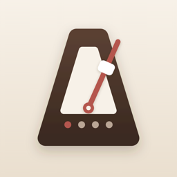

Practice Desk Support
A practice room for musicians on iPad: metronome, tuner and Home Screen widgets.
Contact
Questions, bug reports or feature ideas? Email bar.burle@gmail.com. I usually reply within a few days.
Questions, bug reports or feature ideas? Email bar.burle@gmail.com. I usually reply within a few days.
Frequently asked questions
The tuner doesn't react.
The tuner needs microphone access. Open Settings › Privacy & Security › Microphone and turn it on for Practice Desk.
How do I add a widget to the Home Screen?
Touch and hold an empty area of the Home Screen, tap Edit › Add Widget, search for “Practice Desk” and pick a size. Touch and hold a widget and choose Edit Widget to change its theme.
How do I change the layout?
Tap + › Edit pages, or touch and hold a panel and choose Edit page. Drag panels to reorder them and drag the bottom corner to resize. Use + to add a new tool.
Can I make my own colours?
Yes. Tap the gear on any panel and choose Customize to design your own theme.